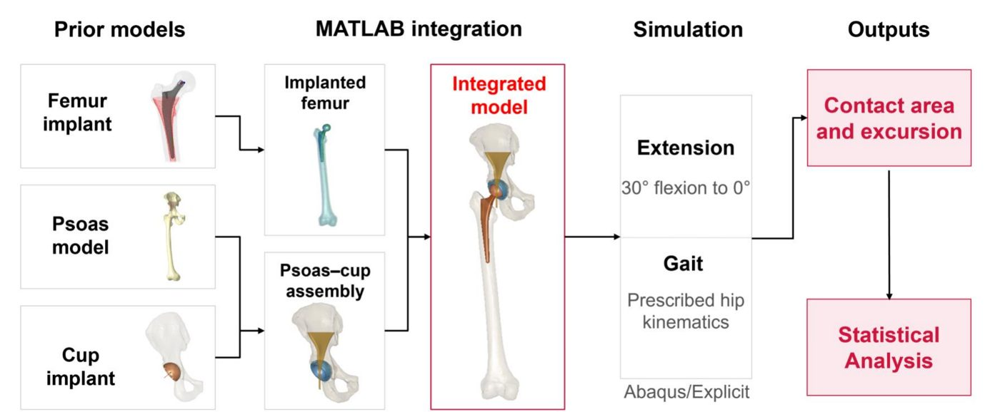
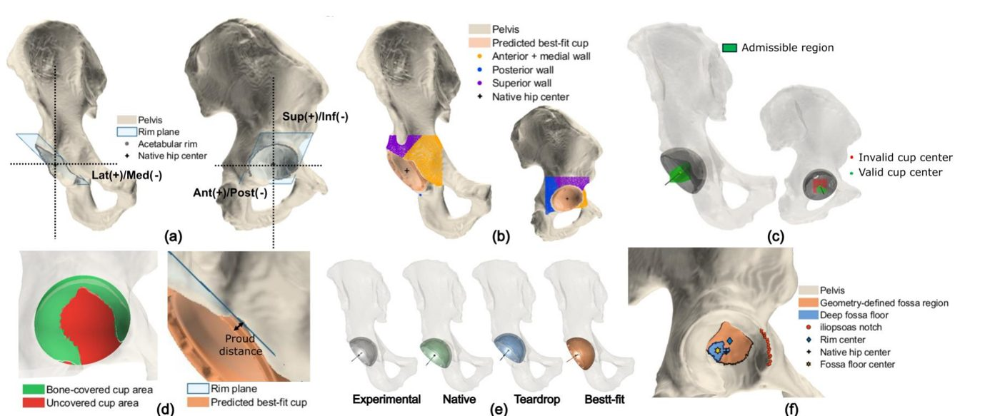
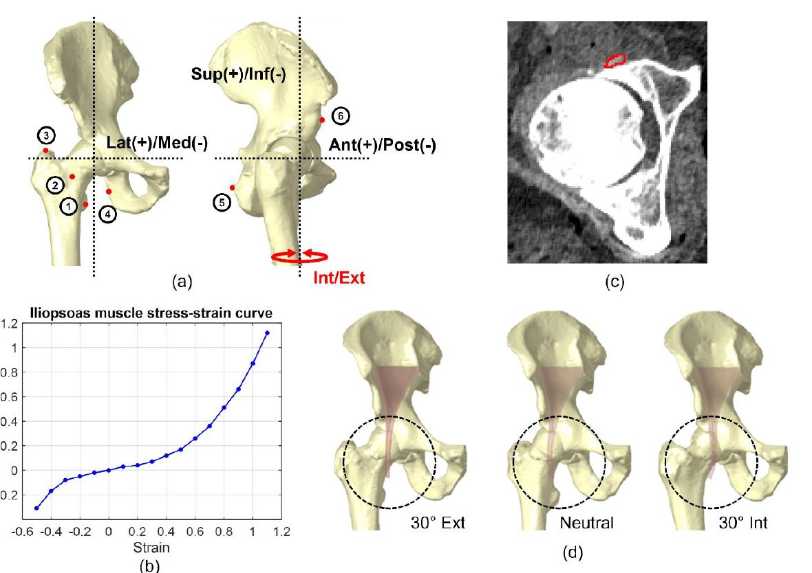
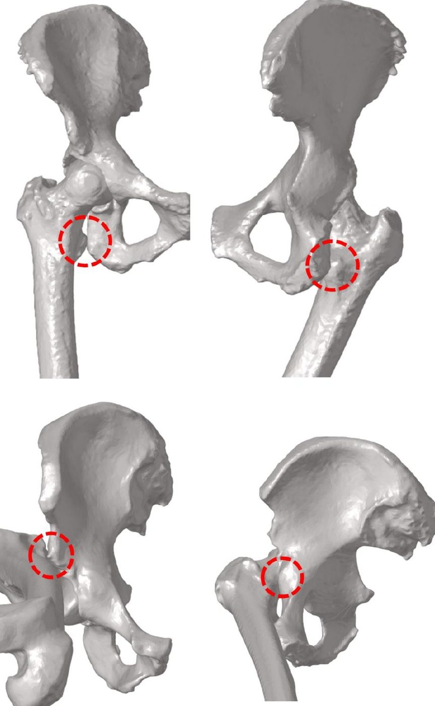
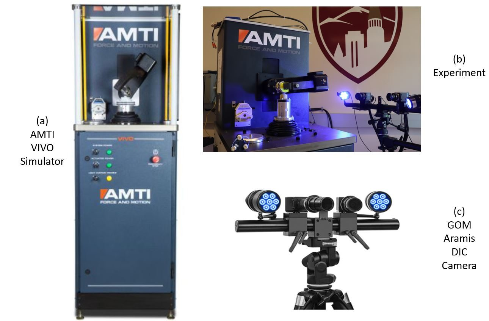

Projects
Research at the Center for Orthopaedic Biomechanics, University of Denver (advisor: Dr. Chadd W. Clary), listed from most recent. Click a project for details.
May 2026 – Nov 2026
Simulates passive extension and gait in 130 virtually reconstructed hips to determine how cup overhang and femoral stem design drive iliopsoas impingement after THA.

Jan 2026 – Nov 2026
Maps every anatomically admissible acetabular cup position for an individual patient and quantifies the trade-offs between hip-center restoration, bone coverage, and bone removal.

Dec 2023 – Nov 2026
A subject-specific finite element workflow in 200 hips that establishes the first population-scale reference for how the iliopsoas contacts and slides over the pelvis and femoral head.

May 2021 – Dec 2023
Quantifies how pelvic tilt and bone shape limit impingement-free hip motion in 200 hips and identifies anatomical risk phenotypes for standing and sitting.

Aug 2020 – May 2021
Builds statistical shape models of the pelvis, femur, tibia, and patella from hundreds of CT-derived bones to capture anatomical variability for population-based simulation.
Statistical Shape Model
Feb 2018 – Aug 2020
Develops and validates a finite element model of patellar implant–bone micromotion against simulator experiments to evaluate cementless knee implant designs.

Feb 2018 – 2019
Applies worst-case, in vivo-derived lunge loading on a joint simulator to evaluate patellar implant deformation for pre-clinical durability testing.
